Bagger User Guide: Making bags
Creating a new bag
Advantages of creating a new bag -
Any arbitrary files or directories can be added to a new bag. The bag can be saved in any location either as an unserialized directory or using any of the serialization formats provided.
Disadvantages of creating a new bag -
If the bag is saved in a new location and/or in a serialized format, all of the files will be copied, which is potentially expensive in terms of time and disk space.
To create a new bag from scratch the user first selects the ‘Create New Bag’ button from the Bag action buttons at the top of the Bagger application. This clears any pre-existing bag and creates an empty bag with blank values for the input forms and resets previously selected buttons and options to their default values. The user does not yet need to enter a bag name. This name and location will be defined when the user saves the bag.
- Basic flow:
- 1. User selects to create a new bag.
- 2. User selects a bag version.
- 3. Application clears any displayed information from previous bag and creates a new bag.
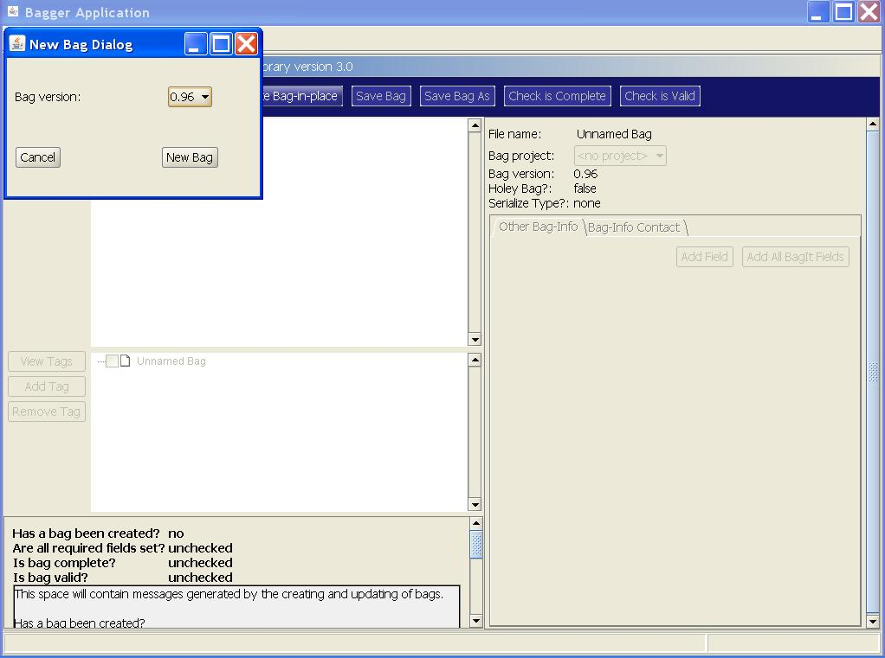
A New Bag Dialog window appears that gives the user the option to select which version of BagIt this bag will comply with. The default bag version will be the latest BagIt specification implemented in BIL. Selecting the New Bag button will create an empty bag with default settings.
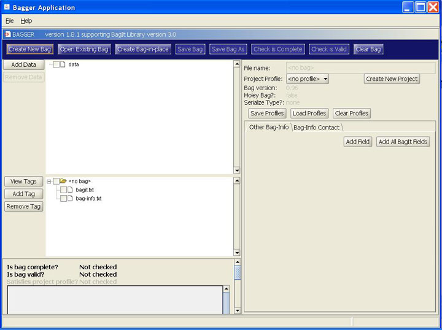
Notice that the new bag has several additional buttons now enabled:
- ‘Add Data’
- ‘View Tags’
- ‘Add Tag’
- ‘Remove Tag’
- ‘Create New Project’
- ‘Save Profiles’
- ‘Load Profiles’
- ‘Clear Profiles’
- ‘Add Field’
- ‘Add All BagIt Fields’
We will address the function of each of these buttons later in the guide.
For now, select the ‘Add Data’ button to select the first directory of files to include in the bag data payload.
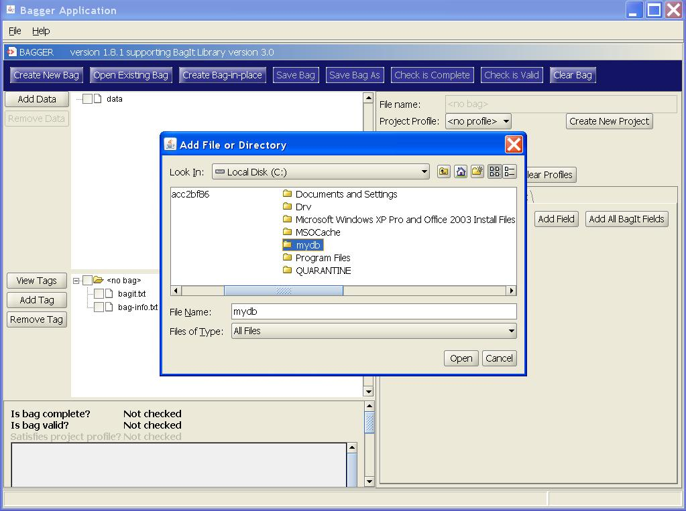
An Add File or Directory chooser dialog is displayed that allows the user to select multiple files and/or directories to be included in the bag. Go to the directory containing the files you would like to include in the bag. Then select the Open button to include them.
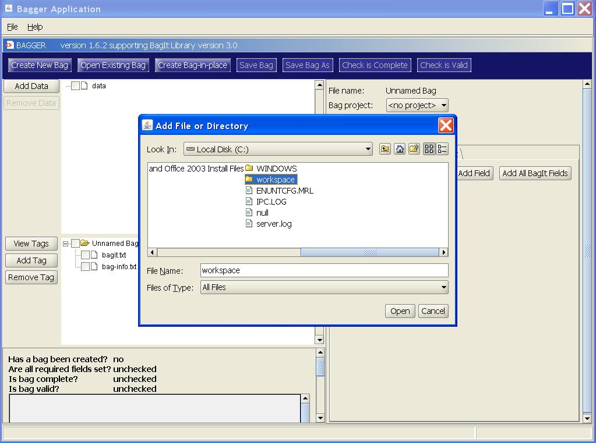
The frame next to the ‘Add Data’ button now displays the hierarchical tree of files as they will be created within the bag data payload directory. Notice that now the ‘Save Bag As’ and ‘Remove Data’ buttons are enabled. Now that the bag has had data content added it can be saved. Select the ‘Save Bag As’ button.

The ‘Save Bag Dialog’ is displayed. This presents the user with all the options available for saving a bag. Next select the Browse button. This will let you select the name and location of the bag that will be saved to your disk drive.
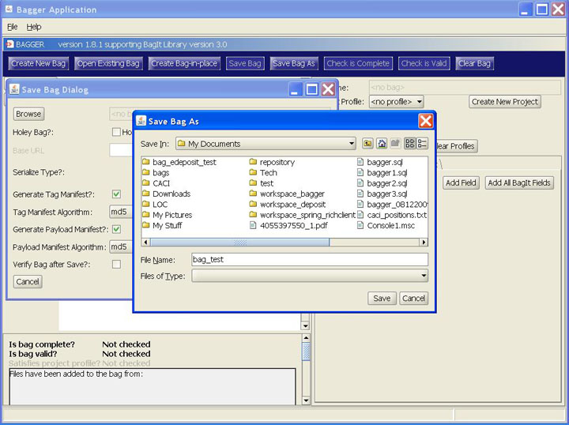
An Add File or Directory chooser dialog is displayed that allows the user to select the location the bag is to be saved within. Enter the name of the bag in the File Name field and then select the Save button. You have now selected where you want to save the bag and what it is to be called. We will look at the other features of the ‘Save Bag Dialog’ later in this guide. For now, select the ‘Save’ button. Once the bag has successfully been saved a Bag saved popup confirmation dialog is shown.
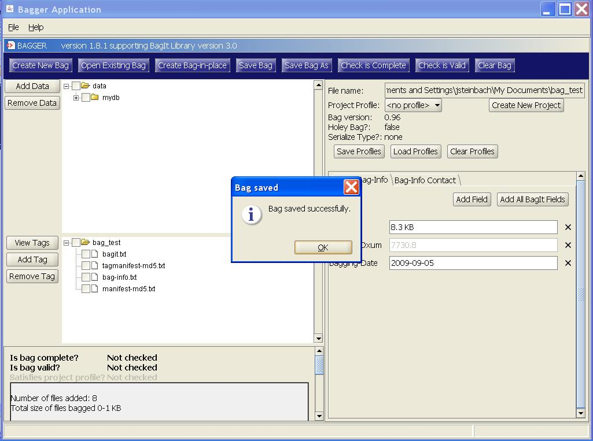
Select Ok from the popup dialog to see the newly saved bag.
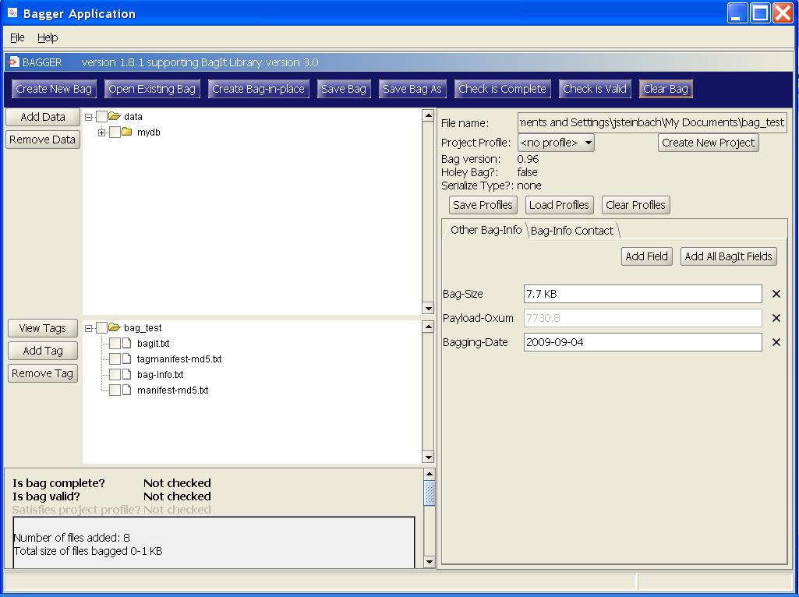
Notice that the ‘Check Is Complete’, ‘Check Is Valid’ and ‘Save Bag’ buttons are now enabled. These features will be discussed later in the guide.
Open an existing bag on disk
The Bagger Application can also load an existing bag folder or serialized bag file. This could be done to check whether the folder contains a valid bag or to add more data or more information to an existing bag.
Start by selecting the ‘Open Existing Bag’ button from the Bag action buttons at the top of the application. This displays a directory and file chooser dialog window. Select the desired bag from the file chooser dialog and then select the Open button. This will load the directory or file and create a bag if one exists.
- Basic flow:
- 1. User selects to open an existing bag.
- 2. User selects a bag on disk. (User provides file/directory using a File/Directory picker. User should have option to limit display of files by serialization format.)
- 3. Application creates the bag.
- 4. Application clears any displayed information from the previous bag and displays information from new bag.
Note: You do not need to close the current bag you are working on. It will start a new bag in its place, but if you have not already saved the current bag it will be replaced with the new bag.
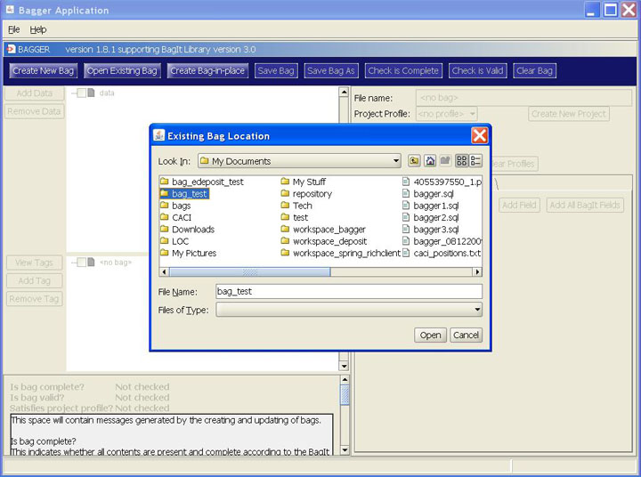
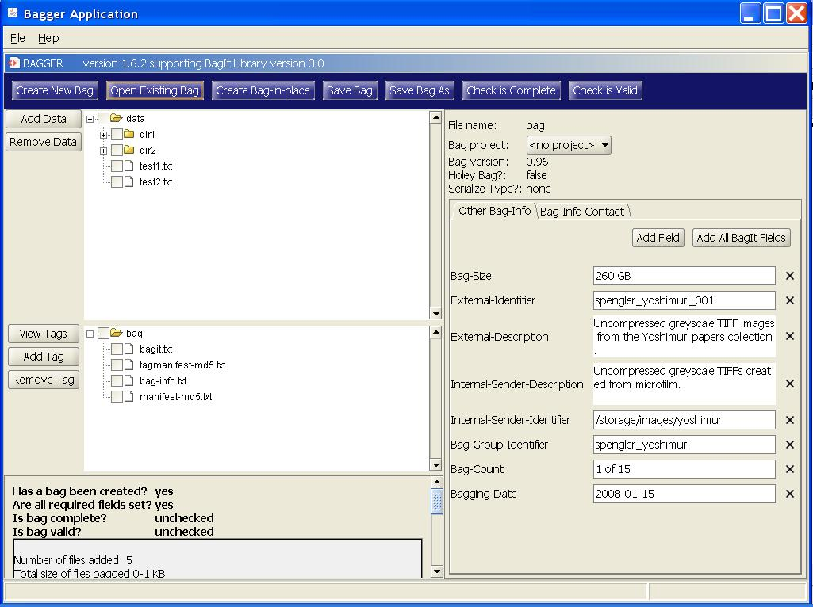
The existing bag has been loaded and its data contents are now displayed in the data hierarchy file tree. Notice that all the buttons are now enabled. You may now check the status of this bag, add additional data, or edit the Bag-Info forms and update it.
Creating a bag-in-place
Advantages of creating a bag in place -
The files or directories will be moved into the bag structure rather than copied, which is efficient in terms of time and disk space.
Disadvantages of creating a bag in place -
Only the files or directories at a particular location will be added to the new bag. The bag will be saved at that location and must be unserialized.
To create a new bag-in-place the user first selects the ‘Create Bag-in-place’ button from the Bag action buttons at the top of the Bagger application.
- Basic flow:
- 1. User selects to create a bag-in-place.
- 2. User selects a directory on disk. (User provides file/directory using a File/Directory picker. User should have option to limit display of files by serialization format.)
- 3. User selects a version and whether to retain the base directory.
- 4. Application creates the bag, including moving the directory/files as necessary to create the bag structure, completing the bag, and writes to disk.
- 5. Application clears any displayed information from the previous bag and displays information from new bag.
Notes: The directory that is bagged in place may be:
- - A set of files/directories in the basic structure of bag a bag (i.e., it has a data directory with content), but is not complete.
- - A directory containing a set of files/directories.
A New Bag in Place Dialog window appears that gives the user the option to select which version of BagIt this bag will comply with. The default bag version will be the latest BagIt specification implemented in BIL.
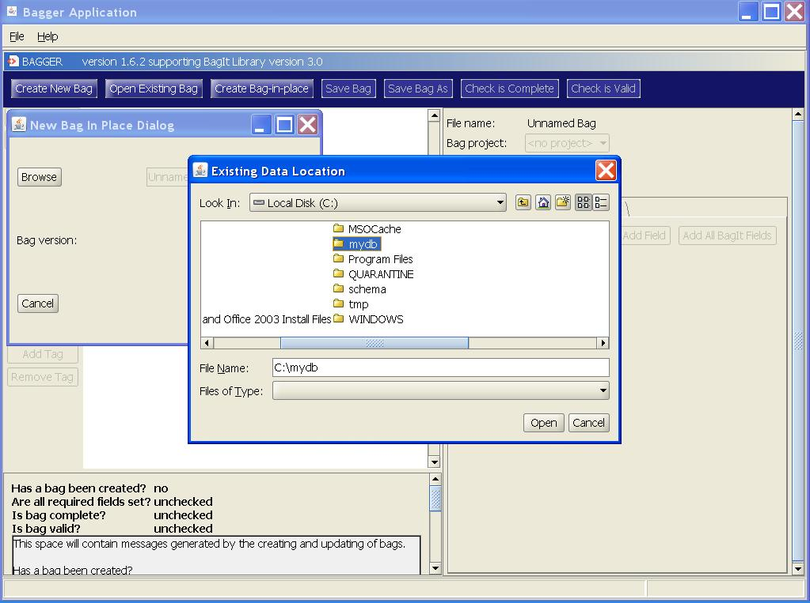
In addition the user chooses the data directory to be bagged by selecting the Browse button.
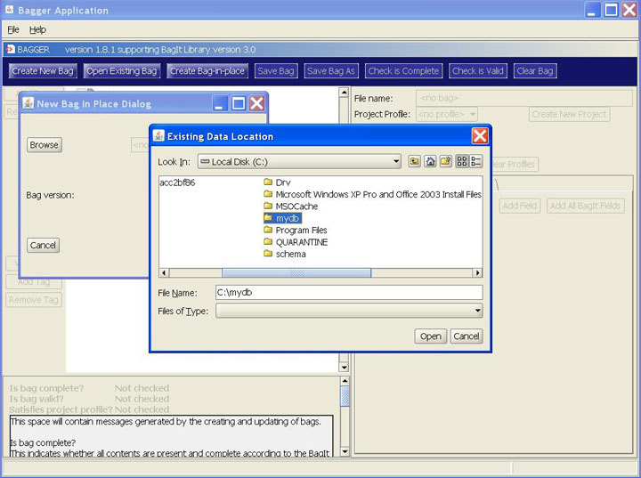
Choose the existing data location you wish to bag and then select the Open button.

Selecting the Bag In Place button will clear any pre-existing bag and save a bag with a data payload from the chosen directory. A Bag saved dialog confirms that the bag was successfully saved to disk.
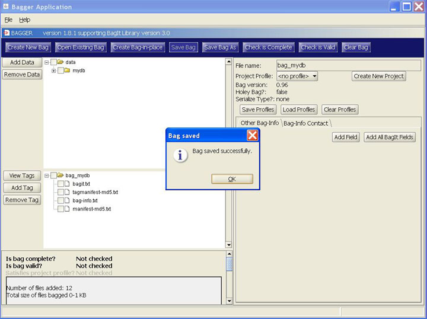
Select the Ok button to view the newly created bag. The input forms and previously selected buttons and options are reset to their default values. The bag name and location were derived from the selected data directory name.
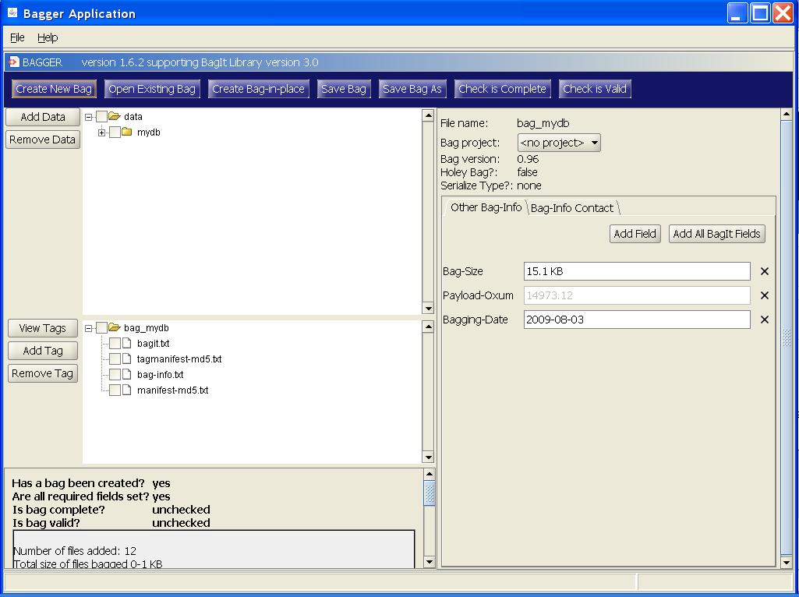